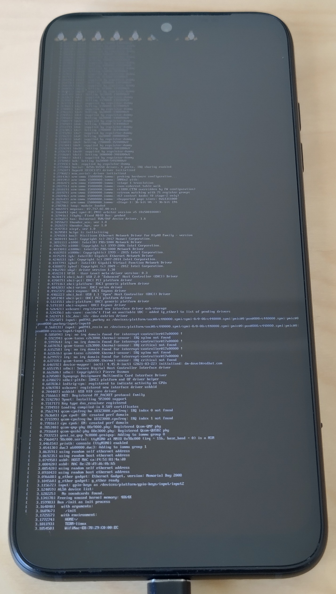

Fairphone 4 (fairphone-fp4)
|
 Framebuffer console on mainline kernel | |
| Manufacturer | Fairphone |
|---|---|
| Name | 4 |
| Codename | fairphone-fp4 |
| Released | 2021 |
| Category | community |
| Original software | Android |
| Original version | 11 |
| Hardware | |
| Chipset | Qualcomm Snapdragon 750G (SM7225) |
| CPU | Octa-core Kryo 570 |
| GPU | Adreno 619 |
| Display | 1080x2340 |
| Storage | 128GB/256GB |
| Memory | 6GB/8GB |
| Architecture | aarch64 |
| Type | handset |
{kind=link}
| USB Networking |
Works
|
|---|---|
| Flashing |
Works
|
| Touchscreen |
Works
|
| Display |
Works
|
| WiFi |
Works
|
| FDE | |
| Mainline |
Works
|
| Battery |
Broken
|
| 3D Acceleration |
Works
|
| Audio |
Broken
|
| Bluetooth |
Works
|
| Camera |
Broken
|
| GPS |
Broken
|
| Mobile data |
Broken
|
| SMS |
Broken
|
| Calls |
Broken
|
| USB OTG |
Broken
|
| NFC |
Broken
|
| Accelerometer |
Broken
|
|---|---|
| Magnetometer |
Broken
|
| Ambient Light |
Broken
|
| Proximity |
Broken
|
| Hall Effect |
Unavailable
|
| Barometer |
Unavailable
|
| Power Sensor |
Unavailable
|
| Camera Flash |
Works
|
|---|---|
| Keyboard |
Unavailable
|
| Touchpad |
Unavailable
|
| USB-A |
Unavailable
|
| HDMI/DP |
Broken
|
| Ir TX |
Unavailable
|
| Ir RX |
Unavailable
|
| Stylus |
Unavailable
|
| Haptics |
Works
|
| Ethernet |
Unavailable
|
| FOSS bootloader |
Unavailable
|
Contributors
Users owning this device
How to enter flash mode
For booting into fastboot, turn off the phone, hold volume down and plug in the USB cable.
Installation
Unlock the bootloader according to the official instructions.
UBports Installer
You can use UBports Installer v0.9.8 (or later) to flash a prebuilt image of postmarketOS onto your Fairphone 4. Just select postmarketOS in the OS selection and choose the desired UI and lean back!
Manually
You need to erase the dtbo partition for the current slot with fastboot erase dtbo.
The rest of the installation is standard, but because the device contains A/B slots, you must watch out for the correct slot being active.
The device does not contain a system as you might be used to, it contains one super partition which contains system/system_ext/product/vendor/odm partitions, in _a and _b variant each. This concept is called Dynamic Partitions. |
You have a few possibilities to flash the postmarketOS rootfs:
-
userdatapartition (> 100 GB space):pmbootstrap flasher flash_rootfs --partition userdata -
superpartition (6 GB space):pmbootstrap flasher flash_rootfs --partition super - SD card:
pmbootstrap flasher flash_rootfs --sdcard /dev/$blk_dev - Subpartition of
superusing fastbootd.
Resources
- Repairability and recyclers information on Fairphone 4 - Schematics and other information
Partition layout
fairphone-fp4:~# fdisk -l -o Device,Start,End,Sectors,Size,Name /dev/sda
Disk /dev/sda: 117.27 GiB, 125908811776 bytes, 30739456 sectors Disk model: KM2V8001CM-B707 Units: sectors of 1 * 4096 = 4096 bytes Sector size (logical/physical): 4096 bytes / 4096 bytes I/O size (minimum/optimal): 524288 bytes / 524288 bytes Disklabel type: gpt Disk identifier: CFAF47FD-955A-B7E5-3B44-7CB199157323 Device Start End Sectors Size Name /dev/sda1 6 29 24 96K ALIGN_TO_128K_3 /dev/sda2 30 31 2 8K ssd /dev/sda3 32 8223 8192 32M persist /dev/sda4 8224 8479 256 1M misc /dev/sda5 8480 8607 128 512K keystore /dev/sda6 8608 8735 128 512K frp /dev/sda7 8736 16383 7648 29.9M metadata /dev/sda8 16384 67583 51200 200M oempersist /dev/sda9 67584 2217164 2149581 8.2G rawdump /dev/sda10 2217165 3790028 1572864 6G super /dev/sda11 3790029 30739450 26949422 102.8G userdata
fairphone-fp4:~# fdisk -l -o Device,Start,End,Sectors,Size,Name /dev/sdb
Disk /dev/sdb: 8 MiB, 8388608 bytes, 2048 sectors Disk model: KM2V8001CM-B707 Units: sectors of 1 * 4096 = 4096 bytes Sector size (logical/physical): 4096 bytes / 4096 bytes I/O size (minimum/optimal): 524288 bytes / 524288 bytes Disklabel type: gpt Disk identifier: C294D7C7-0358-526E-7C3A-26D0921BB1F3 Device Start End Sectors Size Name /dev/sdb1 6 901 896 3.5M xbl_a /dev/sdb2 902 933 32 128K xbl_config_a /dev/sdb3 934 2042 1109 4.3M last_parti
fairphone-fp4:~# fdisk -l -o Device,Start,End,Sectors,Size,Name /dev/sdc
Disk /dev/sdc: 8 MiB, 8388608 bytes, 2048 sectors Disk model: KM2V8001CM-B707 Units: sectors of 1 * 4096 = 4096 bytes Sector size (logical/physical): 4096 bytes / 4096 bytes I/O size (minimum/optimal): 524288 bytes / 524288 bytes Disklabel type: gpt Disk identifier: 33EF572A-E407-059A-2A48-608D0AC95DF2 Device Start End Sectors Size Name /dev/sdc1 6 901 896 3.5M xbl_b /dev/sdc2 902 933 32 128K xbl_config_b /dev/sdc3 934 2042 1109 4.3M last_parti
fairphone-fp4:~# fdisk -l -o Device,Start,End,Sectors,Size,Name /dev/sdd
Disk /dev/sdd: 128 MiB, 134217728 bytes, 32768 sectors Disk model: KM2V8001CM-B707 Units: sectors of 1 * 4096 = 4096 bytes Sector size (logical/physical): 4096 bytes / 4096 bytes I/O size (minimum/optimal): 524288 bytes / 524288 bytes Disklabel type: gpt Disk identifier: 7E252AAA-82B5-5A26-C6B5-D7DD4C57C080 Device Start End Sectors Size Name /dev/sdd1 6 31 26 104K ALIGN_TO_128K_1 /dev/sdd2 32 63 32 128K cdt /dev/sdd3 64 319 256 1M ddr /dev/sdd4 320 32762 32443 126.7M last_parti
fairphone-fp4:~# fdisk -l -o Device,Start,End,Sectors,Size,Name /dev/sde
Disk /dev/sde: 1.64 GiB, 1744830464 bytes, 425984 sectors Disk model: KM2V8001CM-B707 Units: sectors of 1 * 4096 = 4096 bytes Sector size (logical/physical): 4096 bytes / 4096 bytes I/O size (minimum/optimal): 524288 bytes / 524288 bytes Disklabel type: gpt Disk identifier: E7841167-3D00-D421-8846-7B7A871AB8A1 Device Start End Sectors Size Name /dev/sde1 6 31 26 104K ALIGN_TO_128K_4 /dev/sde2 32 159 128 512K aop_a /dev/sde3 160 1183 1024 4M tz_a /dev/sde4 1184 1191 8 32K multiimgoem_a /dev/sde5 1192 1319 128 512K hyp_a /dev/sde6 1320 51239 49920 195M modem_a /dev/sde7 51240 51751 512 2M bluetooth_a /dev/sde8 51752 52775 1024 4M mdtpsecapp_a /dev/sde9 52776 60967 8192 32M mdtp_a /dev/sde10 60968 61223 256 1M abl_a /dev/sde11 61224 77607 16384 64M dsp_a /dev/sde12 77608 77735 128 512K keymaster_a /dev/sde13 77736 102311 24576 96M boot_a /dev/sde14 102312 102343 32 128K devcfg_a /dev/sde15 102344 102363 20 80K qupfw_a /dev/sde16 102364 126939 24576 96M recovery_a /dev/sde17 126940 126955 16 64K vbmeta_system_a /dev/sde18 126956 126971 16 64K vbmeta_a /dev/sde19 126972 133115 6144 24M dtbo_a /dev/sde20 133116 133627 512 2M imagefv_a /dev/sde21 133628 134139 512 2M uefisecapp_a /dev/sde22 134140 177659 43520 170M core_nhlos_a /dev/sde23 177660 177691 32 128K featenabler_a /dev/sde24 177692 178331 640 2.5M fsgbk_a /dev/sde25 178332 182427 4096 16M questdatafv /dev/sde26 182428 182555 128 512K aop_b /dev/sde27 182556 183579 1024 4M tz_b /dev/sde28 183580 183587 8 32K multiimgoem_b /dev/sde29 183588 183715 128 512K hyp_b /dev/sde30 183716 233635 49920 195M modem_b /dev/sde31 233636 234147 512 2M bluetooth_b /dev/sde32 234148 235171 1024 4M mdtpsecapp_b /dev/sde33 235172 243363 8192 32M mdtp_b /dev/sde34 243364 243619 256 1M abl_b /dev/sde35 243620 260003 16384 64M dsp_b /dev/sde36 260004 260131 128 512K keymaster_b /dev/sde37 260132 284707 24576 96M boot_b /dev/sde38 284708 284739 32 128K devcfg_b /dev/sde39 284740 284759 20 80K qupfw_b /dev/sde40 284760 309335 24576 96M recovery_b /dev/sde41 309336 309351 16 64K vbmeta_system_b /dev/sde42 309352 309367 16 64K vbmeta_b /dev/sde43 309368 315511 6144 24M dtbo_b /dev/sde44 315512 315543 32 128K featenabler_b /dev/sde45 315544 316055 512 2M imagefv_b /dev/sde46 316056 316567 512 2M uefisecapp_b /dev/sde47 316568 360087 43520 170M core_nhlos_b /dev/sde48 360088 360727 640 2.5M fsgbk_b /dev/sde49 360728 360728 1 4K devinfo /dev/sde50 360729 360984 256 1M dip /dev/sde51 360985 361048 64 256K apdp /dev/sde52 361049 363096 2048 8M spunvm /dev/sde53 363097 371452 8356 32.7M splash /dev/sde54 371453 371453 1 4K limits /dev/sde55 371454 371454 1 4K limits-cdsp /dev/sde56 371455 371710 256 1M toolsfv /dev/sde57 371711 373758 2048 8M logfs /dev/sde58 373759 374270 512 2M cateloader /dev/sde59 374271 390654 16384 64M logdump /dev/sde60 390655 390686 32 128K storsec /dev/sde61 390687 390814 128 512K uefivarstore /dev/sde62 390815 390821 7 28K secdata /dev/sde63 390822 390949 128 512K catefv /dev/sde64 390950 391205 256 1M catecontentfv /dev/sde65 391206 392229 1024 4M oembin /dev/sde66 392230 392261 32 128K swversion /dev/sde67 392262 425978 33717 131.7M last_parti
fairphone-fp4:~# fdisk -l -o Device,Start,End,Sectors,Size,Name /dev/sdf
Disk /dev/sdf: 128 MiB, 134217728 bytes, 32768 sectors Disk model: KM2V8001CM-B707 Units: sectors of 1 * 4096 = 4096 bytes Sector size (logical/physical): 4096 bytes / 4096 bytes I/O size (minimum/optimal): 524288 bytes / 524288 bytes Disklabel type: gpt Disk identifier: 807C60B8-2098-B26C-7DC6-B11C3B173565 Device Start End Sectors Size Name /dev/sdf1 6 31 26 104K ALIGN_TO_128K_2 /dev/sdf2 32 287 256 1M traceability /dev/sdf3 288 319 32 128K fpconfig_persist /dev/sdf4 320 351 32 128K fpconfig /dev/sdf5 352 991 640 2.5M fsg /dev/sdf6 992 1023 32 128K fsc /dev/sdf7 1024 2559 1536 6M tunning /dev/sdf8 2560 4095 1536 6M modemst1 /dev/sdf9 4096 5631 1536 6M modemst2 /dev/sdf10 5632 32762 27131 106M last_parti
fairphone-fp4:~# fdisk -l -o Device,Start,End,Sectors,Size,Name /dev/sdg
Disk /dev/sdg: 12 MiB, 12582912 bytes, 3072 sectors Disk model: KM2V8001CM-B707 Units: sectors of 1 * 4096 = 4096 bytes Sector size (logical/physical): 4096 bytes / 4096 bytes I/O size (minimum/optimal): 524288 bytes / 524288 bytes
See also
- Device package
- Kernel package (close to mainline)
- Firmware package